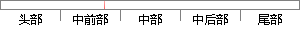

陈留尉氏（今属河南开封市）人，东汉文学家，建安七子之一。
片段位置图

相似结果|
1
原句片段：陈留尉氏（今属河南开封市）人，东汉文学家，建安七子之一。
相似片段 1：荀攸(157年-214年),字公达,豫州颍川颍阴县(今河南许昌)人,中国三国时代军事人物...陈留尉氏(今属河南开封市)人,东汉文学家,建安七子之一。阮瑀的儿子阮籍位列...
相似片段 2：因得名师指点,年轻时曾受学于蔡邕,建安七子之一,东汉文学家,陈留尉氏(今属河南开封市)人,字符瑜,建安七子之阮瑀 阮瑀【ruǎn yǔ】(约165-212...
相似片段 3：建安七子又号邺中七子,是指东汉末年汉献帝建安年间的七位文学家:孔融、陈琳...陈留尉氏(今属河南开封市)人,东汉文学家,建安七子之一。阮瑀的儿子阮籍位列“...
相似片段 4：陈留尉氏(今属河南开封市)人,东汉文学家,建安七子之 一。阮瑀的儿子阮籍位列“竹林七贤”之一,孙阮咸亦是当时名士。应玚(2世纪?-217年),字德琏,东汉汝南南顿...
相似片段 5：汉末诗人。“建安七子”之一。东汉文学家刘梁之孙。刘梁少孤贫,卖书自给,...阮瑀(165——212年),字元瑜,陈留尉氏(今河南开封)人,汉魏文学家建安七子之...
相似片段 6：蔡邕:字伯喈,陈留圉(今河南省开封市尉氏县)人。东汉末年文学家、书法家,故后人...—212年),字元瑜,陈留尉氏(今河南开封尉氏县)人,汉魏文学家,建安七子之一...
相似片段 7：[1]东汉末年文学家,“建安七子”之一,家学渊源,是孔子的第19世孙,太山都尉...●阮瑀(约165—212年),字元瑜,陈留尉氏(今河南开封市尉氏县)人,汉魏文学家...
相似片段 8：东汉末年著名文学家,“建安七子”之一,由于其文才出众,被称为“七子之冠 冕...阮瑀(约165—212年),字元瑜,陈留尉氏(今河南开封)人,汉魏文学家,建安七子...
相似片段 9：东汉末年著名文学家,“建安七子”之一。汉灵帝末年,任大将军何进主簿。何进...阮瑀(约165—212年),字元瑜,陈留尉氏(今河南开封)人,汉魏文学家,建安七子之...
相似片段 10：东汉末年著名文学家 “建安七子”之一 由于其文才出众 被称为“七子之冠冕”...?阮瑀 约165—212年 字元瑜 陈留尉氏 今河南开封 人 汉魏文学家 建安七...
|
※ 片段修改建议 ※
近似词参考：- 汉文：华文
系统自动生成语句：陈留尉氏（今属河南开封市）人，东华文学家，建安七子之一。
注：本片段修改建议为系统自动生成，仅供参考。